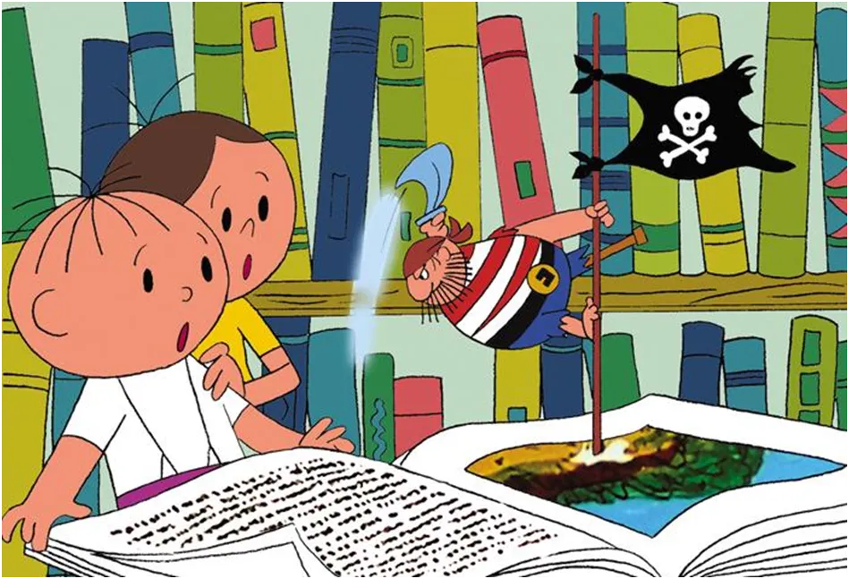

Czy z TV zniknęły “Dobranocki”?
Myślimy, że 1 września 2013 z TV zniknęły "Dobranocki", nic bardziej mylnego! Wtedy telewizje zaczęły nadawać bajki przez całą dobę.
Dziś leci taka bajka: "USA by zbawić świat od kryzysu uruchamia rekordowe rezerwy ropy naftowej..." Nic bardziej mylnego! USA, największy producent i eksporter ropy, po latach zastoju, dzięki rozpętanej wojnie sprzedają teraz za podwójną cenę swoje nagromadzone zapasy. Mało tego, pilnują aby Cieśnina Ormuz była zablokowana jak najdłużej i aby jego konkurenci na rynku ropy zostali blokowani. Inna sprawa, że to tracą kraje arabskie z zachodniej koalicji anty irańskiej, ale oni tam mają swoich "polityków " identycznie jak my, którzy zrobią dla USA wszystko za niewiele.
Niczym się nie różnią "szejkowie" osadzeni na arabskich tronach od naszych "demokratycznych przywódców. Często mają też swoje "parlamenty" do których sami przygotowują listy wyborcze. Na takiej liście nie może się znaleźć nikt kto mógłby nacisnąć w trakcie głosowania inny przycisk niż to wcześniej ustalono.
Ciekawe jest, że wiele z tych arabskich potęg naftowych jest tradycyjnymi tyraniami, ale nikt u nich nie chce wprowadzać demokracji bo tam już są amerykańskie bazy wojskowe. Ale to już nie jest bajka, tylko prawdziwe rakiety trafiające w szpitale i szkoły.
USA podkreśla, że nie może eskortować statków z ropą, w tym głównie dla Europy, bo w tym samym miejscu prowadzi ostrzał. Lud siedzi przed TV/internetem z otwartymi gębami i podziwia.
KURTYNA. OKLASKI. REKLAMA.
Paweł Klimczewski